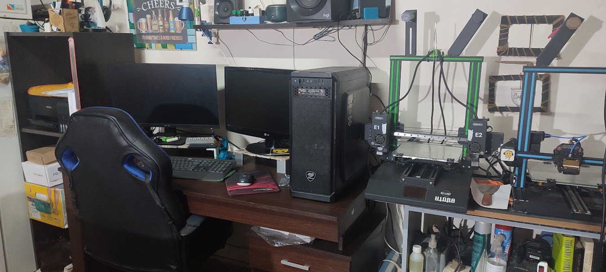
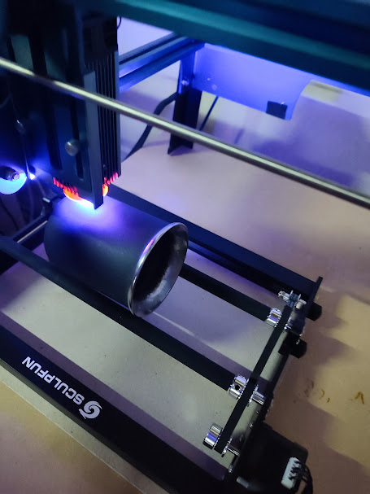
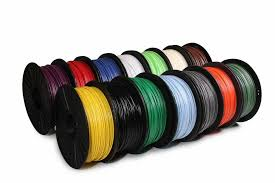

Impresiones 3D

¿Qué es la impresión 3D?
La impresión 3D, también llamada manufactura por adición (inglés), es un conjunto de procesos que producen
objetos a través de la adición de material en capas que corresponden a las sucesivas secciones transversales
de un modelo 3D. Los plásticos y las aleaciones de metal son los materiales más usados para impresión 3D, pero
se puede utilizar casi cualquier cosa, desde hormigón hasta tejido vivo.
Cortes Láser
Gracias a la tecnología con la que cuenta la Cortadora Láser, esta ofrece un amplio abanico de posibilidades de corte, grabado o marcado en una extensa gama de materiales
Tipo de Materiales
los plásticos imprimibles abarcan una enorme variedad de composiciones, limitaciones de impresión y propiedades de los materiales. Para encontrar el material adecuado hay que adecuar los requisitos de las aplicaciones a las propiedades de los materiales con los que se puede imprimir.